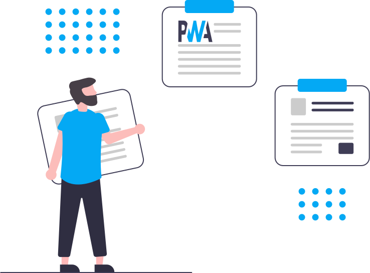

<div class="box">
    <h5>Apa yang dibahas disini?</h5>
    <p class="doc-color">
      Seperti yang telah saya sebutkan di bagian halaman utama website ini, website ini dibuat hanya untuk memenuhi tugas pertama di kelas <strong>Membangun Progressive Web Apps</strong>. Adapun semua resource yang ada di website ini didapat dari beberapa situs sebagai berikut: 
    </p>
    <ol>
      <li>
        <a href="https://medium.com/softwareseni/membuat-aplikasi-dengan-progressive-web-application-pwa-967d8c51e626">Membuat Aplikasi Dengan Progressive Web Application (PWA)</a>
      </li>
      <li>
        <a href="https://medium.com/@tyohan/progressive-web-apps-mulai-dari-mana-bd223a941782">Progressive Web Apps, mulai dari mana?</a>
      </li>
    </ol>
    <p class="doc-color">
      Terima Kasih 😊
    </p>
</div>